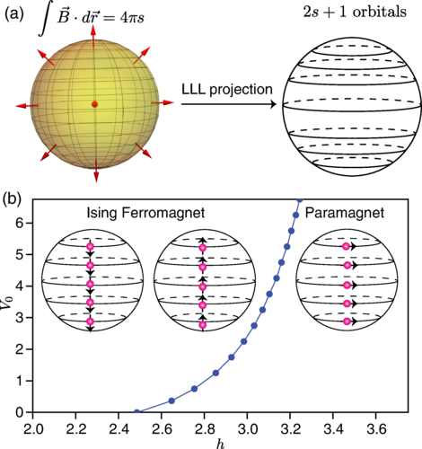
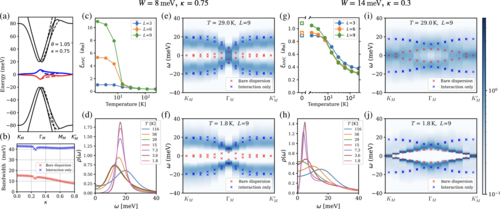
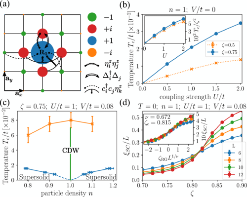
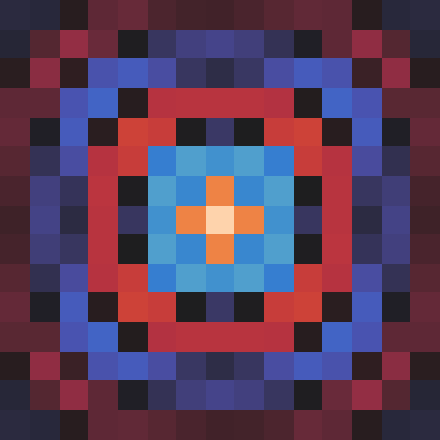

Research Interests
1. Fuzzy Sphere Regularization

A central challenge in modern theoretical physics is the non-perturbative understanding of quantum phase transitions and conformal field theories (CFTs) in 2+1 dimensions. We develop and apply the fuzzy sphere regularization, a new computational framework that places quantum many-body systems on the non-commutative (fuzzy) two-sphere. This geometry allows the state-operator correspondence of radial quantization to be exploited directly in a lattice model, turning the study of 3D CFTs into a tractable quantum many-body problem.
By combining this setup with sign-problem-free quantum Monte Carlo, we can extract CFT data — scaling dimensions, operator content, and symmetry quantum numbers — with high precision. Recent highlights include the demonstration of emergent conformal symmetry at the 3D Ising transition (PRX 2023) and the extension to SU(2) quantum chromodynamics and deconfined quantum critical points (2026).
2. Twisted Bilayer Graphene

Magic-angle twisted bilayer graphene (TBG) is a paradigmatic moiré material that hosts a rich variety of correlated phases — insulating states, unconventional superconductivity, and pseudogap behavior — arising from electron correlations in nearly flat topological bands. The theoretical description of these phenomena is particularly challenging due to multiple electron flavors, long-range Coulomb interactions, and topological obstructions to defining simple lattice models.
We developed the first unbiased quantum Monte Carlo simulations of realistic magic-angle TBG models at charge neutrality, formulated in momentum space to avoid the sign problem even in the presence of band dispersion and symmetry breaking. These simulations revealed the emergence of an insulating Kramers inter-valley coherent state, a pseudogap regime, and specific predictions for tunneling spectra (PRX 2022). More recently, we have studied topological Chern band models relevant to TBG, finding intertwined orders, skyrmion-mediated superconductivity, and proximity to deconfined quantum critical points.
3. Flat-Band Systems

When electronic bands become dispersionless (flat), the kinetic energy is quenched and interactions completely dominate. The ground state is then determined by the subtle interplay of interactions and band geometry — captured by quantities like the Fubini-Study metric and the Berry curvature. We study models of flat bands with tunable topology and quantum metric, using exact quantum Monte Carlo methods, to map out the phase diagrams of competing orders.
Key results include: the discovery of a supersolid phase — where superconductivity and charge density wave order coexist — in a flat-band model with tunable quantum metric (PRL 2023); evidence for intertwined magnetism and superconductivity in isolated correlated flat bands with topological Chern number (PRB 2024); and the broader study of how band geometry controls the onset and character of superconductivity in the flat-band limit.
4. Superconductivity

Unconventional superconductivity arising from repulsive interactions remains one of the most challenging problems in condensed matter physics. We study mechanisms of superconductivity from multiple angles using exact numerical methods. A recurring theme is understanding how non-standard ingredients — flat bands, band topology, quantum geometry, proximity to a metal, or proximity to a quantum critical point — can enhance or modify superconductivity.
Highlights include: demonstrating that widely-used heuristic bounds on the superconducting transition temperature Tc (based on the Fermi temperature, superfluid stiffness, or Debye frequency) are not fundamental and can be violated (npj QM 2022); spin-polaron-mediated superconductivity in doped Chern antiferromagnets; and reservoir-enhanced superconductivity in 1D systems (2025). We also develop tools to diagnose superconducting order without prior assumptions, using the Penrose-Onsager criterion for Cooper pair condensation (2026).
5. Nonequilibrium Many-Body Dynamics
A major frontier in theoretical physics is the behavior of strongly correlated quantum systems driven out of thermal equilibrium. In this regime, the standard rules of thermodynamics do not apply, enabling the dynamic stabilization of novel phases of matter that have no equilibrium counterparts. We explore nonequilibrium quantum phenomena to understand how time-dependent driving or sudden quenches can engineer novel states.
Our efforts focus on quench dynamics (unveiling the relaxation, thermalization, and quantum transport of isolated many-body systems) and periodically driven (Floquet) systems (where external fields can modify effective Hamiltonian parameters and generate dynamical topology). To model these out-of-equilibrium processes, we utilize real-time quantum Monte Carlo simulations and tensor network methods. A recent highlight includes mapping how metallic reservoirs can dynamically enhance superconductivity and near-long-range magnetic order in one-dimensional systems (2026).
Software: ALF
A common thread through all of the above is the numerical machinery that makes it possible. We are core developers of ALF (Algorithms for Lattice Fermions) — in the project's own words, an “open-source, high-performance, general code for auxiliary-field quantum Monte Carlo simulations” of correlated fermions on a lattice. We have contributed as a core developer for over a decade, and ALF underpins much of the research described on this page.
ALF is developed by the ALF Collaboration, ships with a Python interface (pyALF) and a library of ready-made Hamiltonians, and is documented in SciPost Phys. 3, 013 (2017) and SciPost Phys. Codebases 1-v2.4 (2025).
Beyond ALF, we contribute to hybrid MPS + QMC approaches that combine matrix-product states with quantum Monte Carlo to reduce entanglement and the sign problem at the same time (2024), and we are broadening our toolkit with tensor-network and exact-diagonalization methods.